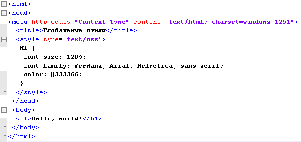

Способы добавления стилей
Для добавления стилей на веб-страницу существует несколько способов, которые различаются своими возможностями и назначением. Далее рассмотрим их подробнее.
Связанные стили
При использовании связанных стилей описание селекторов и их значений располагается в отдельном файле, как правило, с расширением css, а для связывания документа с этим файлом применяется тег <link>. Данный тег помещается в контейнер <head>, как показано ниже
Значения параметров тега <link> — rel и type остаются неизменными независимо от кода, как приведено в данном примере. Значение href задает путь к CSS-файлу, он может быть задан как относительно, так и абсолютно. Заметьте, что таким образом можно подключать таблицу стилей, которая находится на другом сайте.
Содержимое файла mysite.css подключаемого посредством тега <link> приведено ниже
Глобальные стили
При использовании глобальных стилей свойства CSS описываются в самом документе и располагаются в заголовке веб-страницы. По своей гибкости и возможностям этот способ добавления стиля уступает предыдущему, но также позволяет размещать все стили в одном месте. В данном случае, прямо в теле документа, с помощью контейнера<style>, как показано ниже
Внутренние стили
Внутренний или встроенный стиль является по существу расширением для одиночного тега используемого на текущей веб-странице. Для определения стиля используется параметр style, а его значением выступает набор стилевых правил:
Сочетание разных методов подключения стилей
Все описанные методы использования CSS могут применяться как самостоятельно, так и в сочетании друг с другом. В этом случае необходимо помнить об их иерархии. Первым всегда применяется внутренний стиль, затем глобальный стиль и в последнюю очередь связанный стиль. В примере ниже применяются сразу два метода добавления стиля в документ: